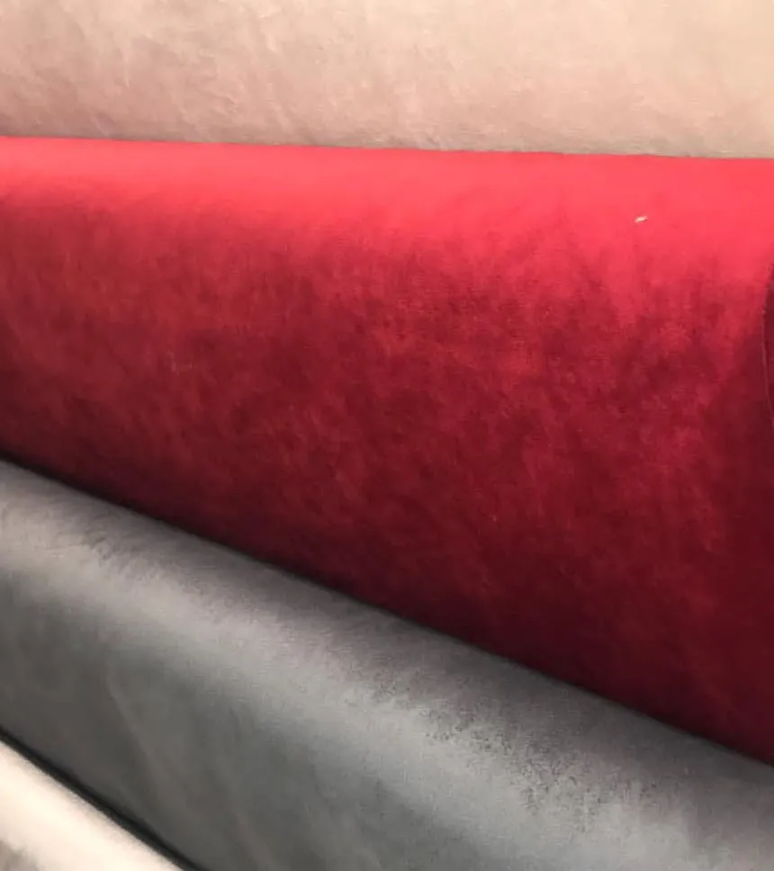

Monatelas
Productos
Telas
Indumentaria
Polar piel animales, ancho 1.50 mt
$9.000
Matelassé trenzas, ancho 1.50 mt
$9.500
Piel sintética, ancho 1.50 mt
$14.800
Lanilla gaspeada, ancho 1.50 mt
$7.500
Tapicería y decoración
Jackard liso, ancho 1.50 mt
$16.900
Jackard pájaros, ancho 1.50 mt
$16.900
Pana estampada, ancho 1.50 mt
$12.400

Pana suave lisa, ancho 1.50 mt
$12.400
Novias / fiestas
Raso color liso, ancho 1.50 mt
$6.700
Tul bordado liso, ancho 1.50 mt
$25.000
Tul nupcial blanco, ancho 1.50 mt
$39.000
Raso color liso, ancho 1.50 mt
$6.700
Mercería
Para tus tejidos
Lana Cisne
$9.000
Hilo macramé
$7.300

Puntilla algodón
$3.500
Puntilla dorada
$3.500
Para recuperar prendas
Cono de hilo
$2.800

Cierres reforzados
$7.000
Cintas
$4.600
Gemas
$3.500
Para tus creaciones
Stras
$4.000
Totora
$5.900
Perlas sueltas
$2.000
Cinta colores